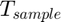

Transform MTI model from continuous-time to discrete-time
Transformation of the continuous-time normalized MTI model to discrete time normalized MTI model. The default method is first order Euler approximation:

with discrete sampling time .
In normalized MTI representation with continuous-time equation
 ,
,
the discrete-time version of the state equation is given by

Contents
Example
Build multilinear model (MTI)
F.U = [[0.3, 0.1 0.1]; [1, -0.12 -1]; [0, -1 0]]; F.Phi = [[0.5, 0, 0.1]; [0, 1.0, 0.2]]; G.U = [0.3; [1]; [0]]; G.Phi= [-0.8]; u=[zeros(20,1);ones(20,1);-ones(20,1);zeros(20,1)]; t=0:1:79; Ts=0; msys=mss(CPN1(F.U,F.Phi),CPN1(G.U,G.Phi),Ts); x0=[0;0]; % initial state [y, tOut, xsim] =msim(msys,u,t,x0); % simulation of discrete time model
Conversion to discrete time
Tsample=1; msysdisc = msys.c2d(Tsample); % initial state [ydisc, ~, xsimdisc] =msim(msysdisc,u,t,x0); % simulation of discrete time model
Plot results
figure() % plot original mti model sgtitle('continous time') subplot(3,1,1) plot(u) xlabel('time') legend('input') subplot(3,1,2) plot(tOut,xsim) xlabel('time') legend({'state 1','state 2'}) subplot(3,1,3) plot(tOut,y) xlabel('time') legend('output') figure() % plot scaled mti model sgtitle('discrete time') subplot(3,1,1) plot(u) xlabel('time') legend('input') subplot(3,1,2) plot(xsimdisc) xlabel('time') legend({'state 1','state 2'}) subplot(3,1,3) plot(ydisc) xlabel('time') legend('output')